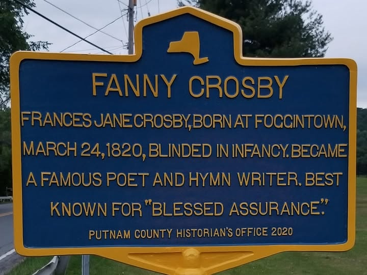
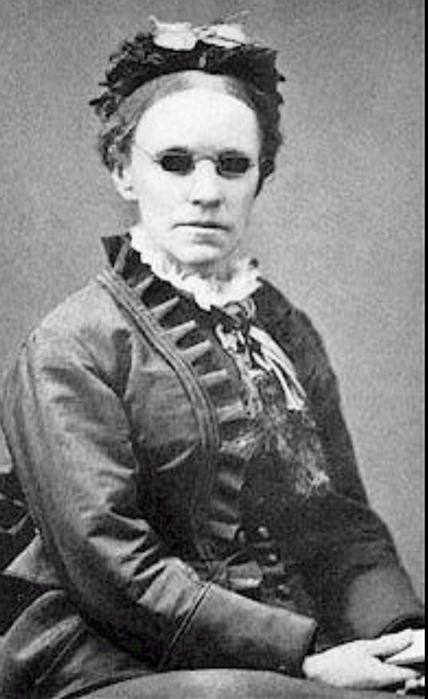
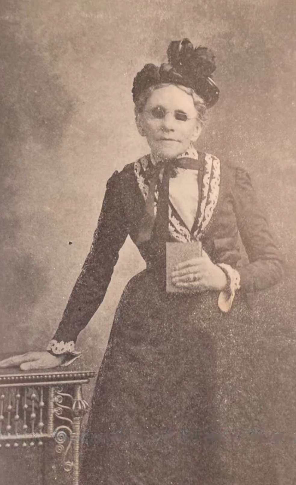

Fanny Crosby
Foggintown Road — birthplace of one of the most prolific hymn writers in American history.

FANNY CROSBY
Frances Jane Crosby, born at Foggintown,
March 24, 1820, blinded in infancy. Became
a famous poet and hymn writer. Best
known for “Blessed Assurance.”
About this Marker
Frances Jane Crosby was born on March 24, 1820, in the small hamlet of Foggintown within the Town of Southeast. She lost her sight as an infant — the standard account attributes the blindness to improper medical treatment of an eye inflammation at roughly six weeks of age, though sources vary on the exact circumstances. Her father died when she was less than a year old, and she was raised by her mother and grandmother in modest circumstances, first in Southeast and later in Connecticut.
At fifteen she was admitted to the New York Institution for the Blind in Manhattan, where her gift for poetry quickly distinguished her. She completed her studies and stayed on as a teacher for more than a decade, teaching grammar, rhetoric, and history. During her years at the Institution she recited her poetry before Congress and met multiple American presidents, including James K. Polk, Zachary Taylor, Millard Fillmore, and Grover Cleveland — the last of whom worked at the Institution as a young secretary, copying out Crosby’s poems while she dictated them.
After leaving the Institution she devoted herself to writing and mission work in New York City’s slums, particularly at the Bowery Mission. Over a writing career that spanned more than sixty years she produced an extraordinary body of work — estimates of her total output range from 8,000 to 9,000 hymns, written so prolifically that her publishers required her to use pen names (over 200 of them) to disguise the proportion of any one hymnal that was her work. Her best-known hymns — “Blessed Assurance,” “Pass Me Not, O Gentle Savior,” “To God Be the Glory,” “Rescue the Perishing,” “Praise Him! Praise Him!”, “All the Way My Savior Leads Me,” and many others — remain in continuous use in Christian worship more than a century after her death.
She died on February 12, 1915, in Bridgeport, Connecticut, at the age of 94. The marker on Foggintown Road was erected by the Putnam County Historian’s Office in 2020, on the bicentennial of her birth.
Portraits


Blessed assurance, Jesus is mine!
O what a foretaste of glory divine!
Heir of salvation, purchase of God,
Born of His Spirit, washed in His blood.
Town of Southeast, NY
Sources
- On-site photograph of the Putnam County Historian’s Office marker (2020).
- Putnam County, NY — “Remembering Fanny Crosby” (official county tribute page).
- Christian Heritage Project — profile of Crosby and the New York Institution for the Blind.
- Historical Marker Database (HMDB) — New York Institution for the Blind marker entry.
- Portraits: period photographs restored from originals using AI image processing.